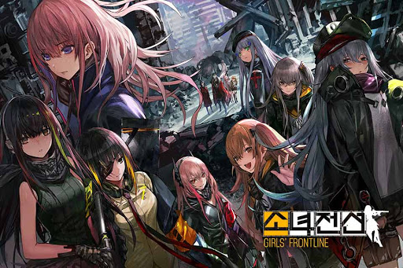

폰겜
소녀전선
프리코네
데챠
소녀전선

중국의
SUNBORN Network Technology
가 제작한 총기 관련 캐릭터 수집형 모바일 게임이자,
소녀전선
시리즈의 중심 타이틀.
제작사는 중국의 SUNBORN Network Technology로 원래는 동인 팀인 MICA Team[14]에서 시작한 회사이다.
MICA Team은 2008년에 설립된 동인 팀으로 원래는 우중 포함 3명의 인원이 동인 화보와 인디 게임을 제작하는 소규모 팀이었다. 2011년 총기 의인화 캐릭터가 나오는 '军武枪械娘'[15]라는 제목의 동인지를 냈으며, 2013년 인디 게임 빵집소녀를 제작하며 이름을 조금씩 알리기 시작했다.